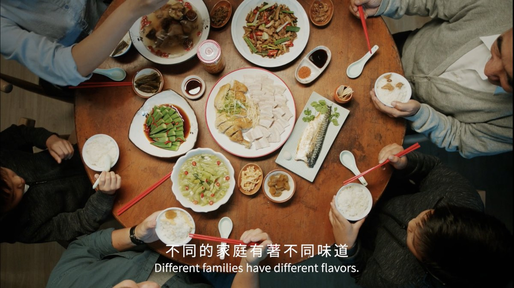
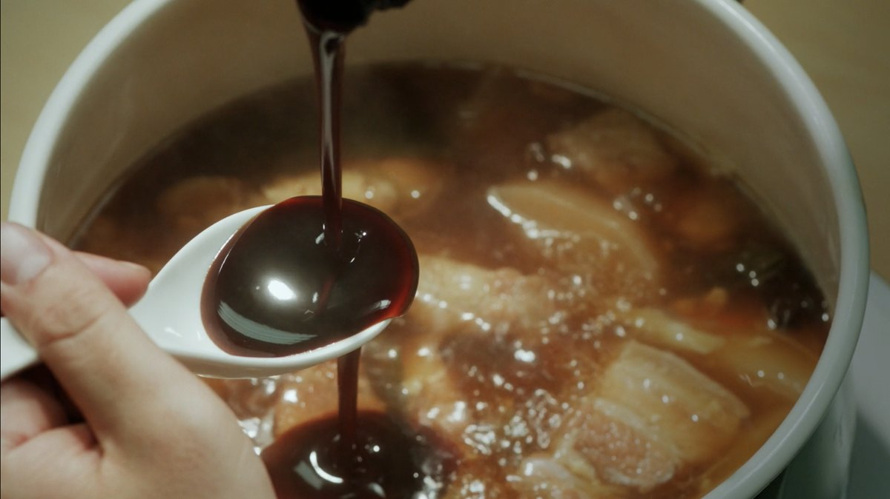
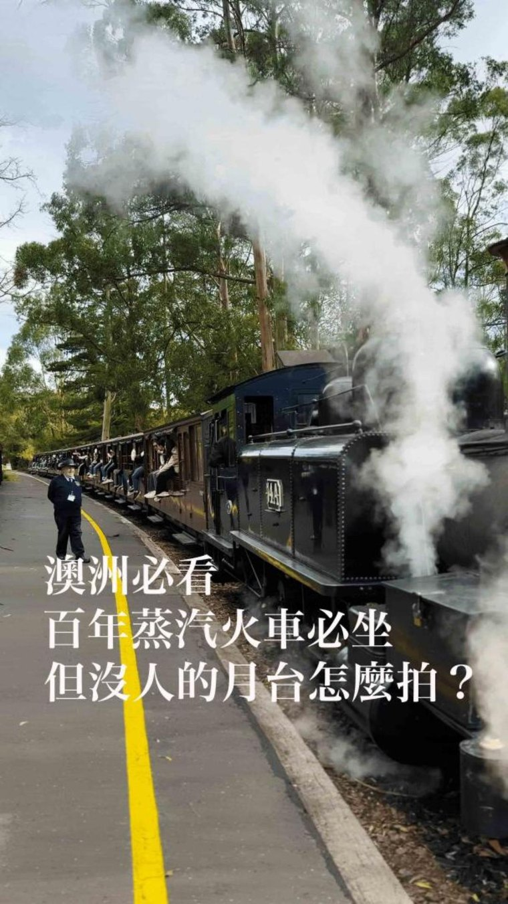
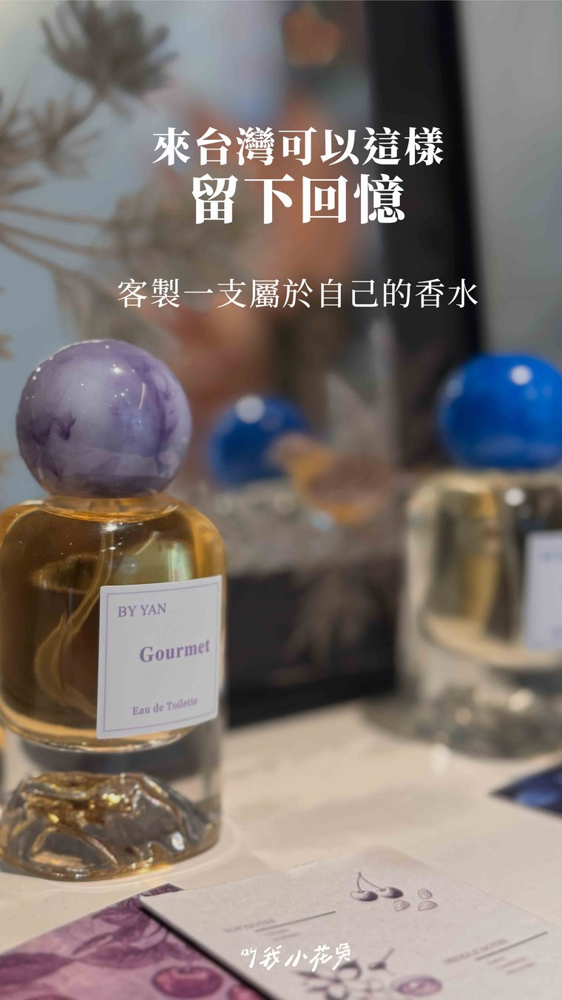

01
內容企劃與在地化
多數品牌來找我們時，需求還沒成形，或者手上是一份總部發下來、與本地語境有落差的 brief。第一步不是開始做，是把要說的事情問清楚。
我們做的事
- 需求梳理與溝通主軸設定
- 國際品牌素材轉譯與在地化
- 品牌規範與審稿流程對接
- 內容主題規劃與年度節奏
產出
一份可以直接執行的內容方案：說什麼、對誰說、在哪個平台用什麼形式說。後面三條服務線都以它為依據。
不論從哪裡開始，都先回到同一件事：這次真正要傳達的是什麼，以及它該用什麼形式出現。
多數品牌來找我們時，需求還沒成形，或者手上是一份總部發下來、與本地語境有落差的 brief。第一步不是開始做，是把要說的事情問清楚。
一份可以直接執行的內容方案：說什麼、對誰說、在哪個平台用什麼形式說。後面三條服務線都以它為依據。
依各平台的閱讀習慣與內容節奏製作素材，並可直接承接投放。TikTok 為官方授權代理，廣告帳戶、素材與成效優化由同一組人處理。
投放前先確認數據的可取得性與涵蓋範圍，寫入專案說明，避免用看不到全貌的數字做判斷。
各平台方案、投放級距與報價依專案需求提供
消費者需要的不只是產品資訊，更是來自不同膚質、年齡與生活情境的真實體驗。依品牌定位、產品功能、價格帶與目標族群篩選合作對象。
涵蓋美妝、美食餐飲與生活消費品，可依品牌定位與產業需求擴充名單與分級標準。
KOL／KOC 分級名單與報價依專案需求提供
從創意概念、人物訪談、腳本企劃到拍攝、剪輯與後期，由同一組人整合。專案初期即釐清製作目的、溝通對象與敘事核心，確保它不在製作過程中被稀釋。
品牌廣告、產品影片、企業形象影片
社群短影音、MV、募資影片、活動紀錄
從照片、家庭影像與訪談中梳理一個人的成長、選擇與牽掛，整理成有情感脈絡的生命故事，而不只是把照片依序排列。
告別式追思影片、生命傳記、家族影像整理、企業創辦人紀錄。
從品牌廣告到社群短片，橫式與直式規格皆可承接。


品牌廣告
保養品系列

澳洲百年蒸汽火車 Puffing Billy

客製香水體驗